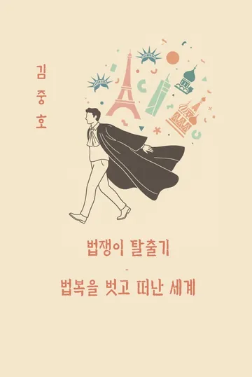
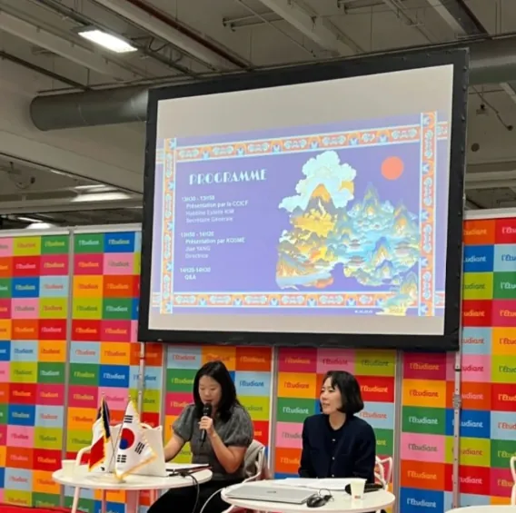
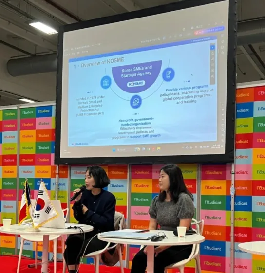
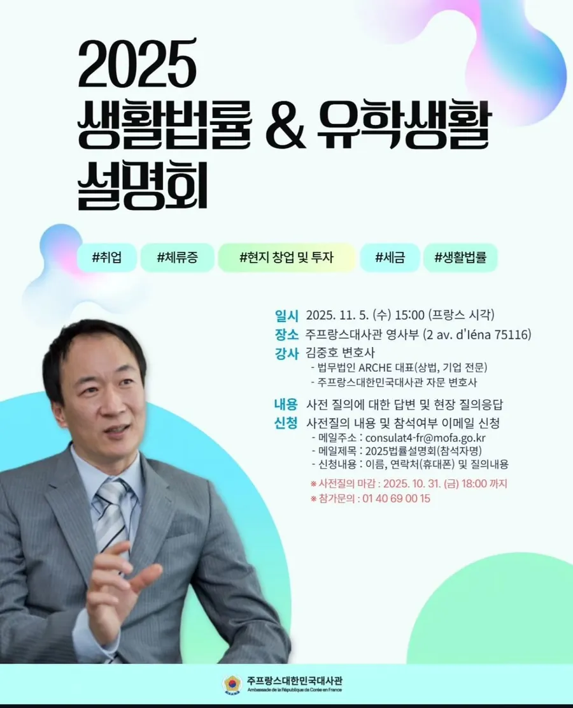
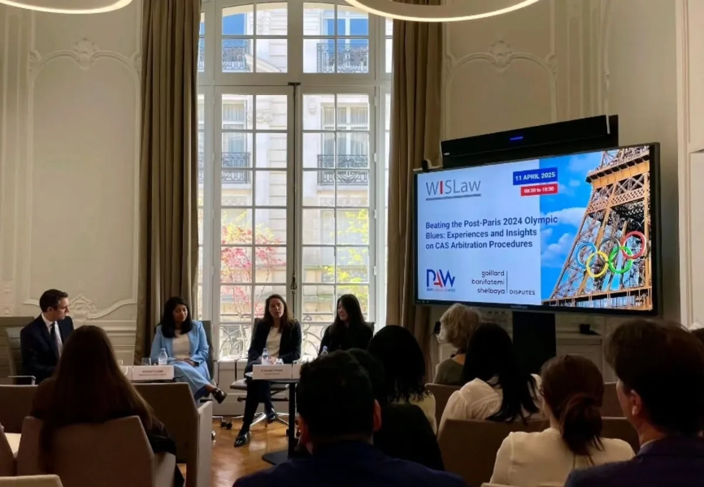
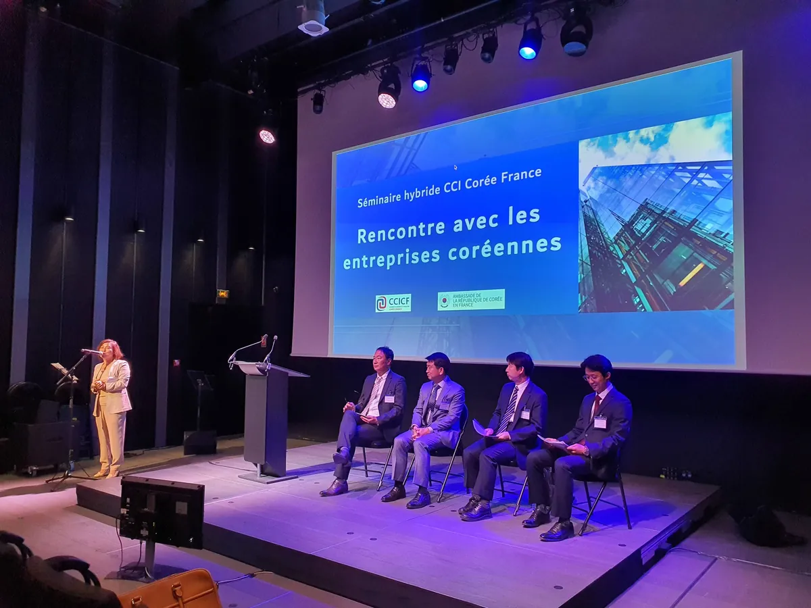
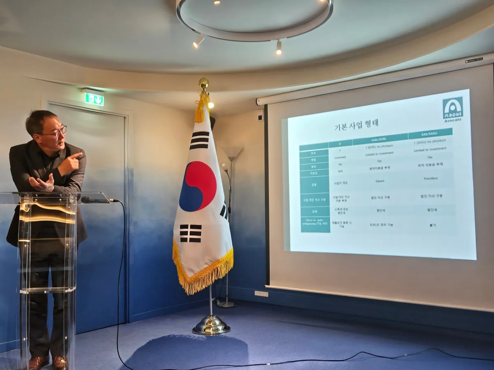
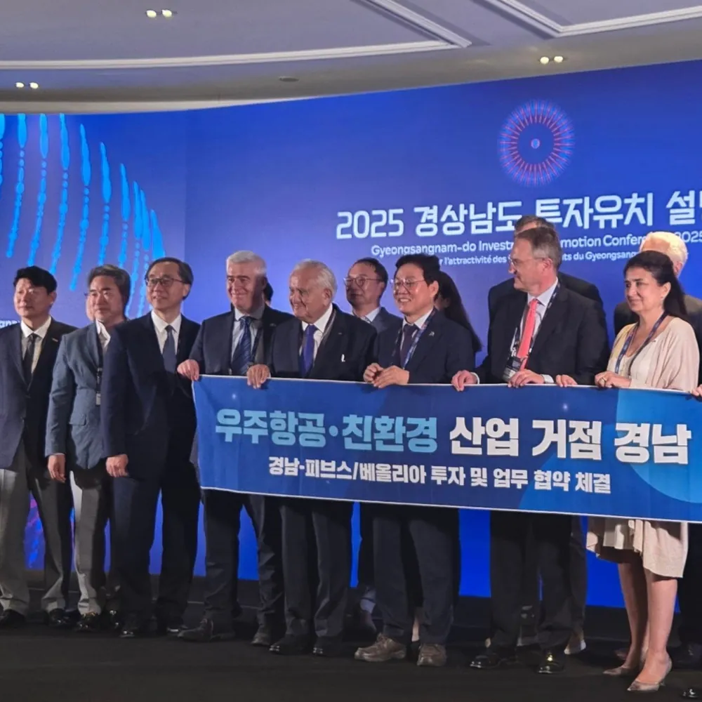

Insights and press
Press coverage of the firm, and where we publish.
Press
[신간소개] 파리에서 활동하는 김중호 변호사의 《잊혀진 약속》New book: James Joong-ho Kim's novel A Forgotten PromiseLegal Times · A Forgotten Promise: The Secrets of the Royal Protocols (James J. Kim, ISBN 979-8270335410)English edition of James Joong-ho Kim's novel, based on the Oegyujanggak restitution case«
Une lecture à la fois aisée et prenante. » — Hauteclaire, Amazon.fr, Book · Amazon · 
법쟁이 탈출기 (김중호 지음, ISBN 9791112072207)Autobiographical essay by James Joong-ho Kim on 25 years of practice in FranceBook · BOOKK (YES24) · 'Weight limit rules same for all': CAS gives reasons for dismissing Vinesh Phogat's plea against olympics disqualificationParis 2024: Habbine Estelle Kim named in Vinesh Phogat's pro bono legal team before the CASThe Economic Times · [인터뷰] 'K-문화에 세계 매료'…김중호 프랑스 변호사, "한류 수출 기업, 행정·법률 정보 숙지 필수"Interview: what Korean companies need to know before entering the French marketAsia Economy · 그들만의 ‘물징계’… 뇌물·성추행 걸려도 법복 벗으면 끝 [탐사기획-법관징계 리포트]Second part of the judicial-discipline investigation: comment on practice in FranceSegye Ilbo · 수뢰판사, 美·英·佛선 ‘파면’ 가능한데… 韓은 고작 ‘정직 1년’ [탐사기획-법관징계 리포트]Investigation on judicial discipline: comment on how judges are disciplined in FranceSegye Ilbo · [주목 이사람] 한국인 첫 프랑스 변호사… 세계시장 공략Profile of the first Korean admitted to the French bar and the founding of ArchèLaw Times · “프랑스의 ‘약탈’ 표현은 우리 작전의 성과”Interview after the appeal: how the French State came to use the word 'pillage'Kyunghyang Shinmun · “외규장각 반환訴 1심 졌지만 ‘약탈’인정 성과…끝까지 투쟁”After the first-instance ruling: the appeal and the French State's acknowledgement of 'pillage'Dong-A Ilbo · 佛행정법원에 외규장각 문서반환 항소한 김중호 변호사Appeal in the Oegyujanggak royal manuscripts restitution case against the French StateSeoul Shinmun · 외규장각 반환소송 항소장 접수Appeal filed in the Oegyujanggak restitution case: the three legal groundsCBS Nocut News · 김중호 외규장각 반환소송 담당 변호사Press conference on the appeal in the Oegyujanggak restitution case (photo)Newsis · 佛 '약탈' 인정… 반환은 미지수At the Paris hearing, the French State uses the word 'pillage' for the first timeDong-A Ilbo · 프랑스 정부, 외규장각 도서 '약탈' 인정The French government acknowledges the 'pillage' of the Oegyujanggak booksThe Hankyoreh · <사람들> 외규장각 유물 반환소송 김중호 변호사Interview on the Oegyujanggak restitution claim against the French StateYonhap News · "훔쳐간 문화재 내놔라" 韓-佛 소송전 2라운드Next stage of the Oegyujanggak restitution litigation, with an interviewCBS Nocut News · 佛 약탈 외규장각 유물 반환 소송 급물살Press conference in front of the French Embassy in Seoul on the restitution caseYonhap News · 프랑스 외규장각 반환 소송 '본격화'The restitution case moves forward after the French government's formal replyYonhap News · “전문화만이 살 길”… 해외 실무수습도A Korean trainee lawyer's placement at Alérion in Paris, then led by James Joong-ho KimSeoul Shinmun · 르몽드 '외규장각도서 반환촉구' 광고 실리기까지Behind the Le Monde advertisement calling for the return of the Oegyujanggak booksThe Hankyoreh · 佛 르몽드에 외규장각도서 반환촉구 광고문 게재Full-page advertisement in Le Monde calling for the return of the Oegyujanggak booksYonhap News · [사회플러스] “외규장각 도서 반환” 佛에 소송A restitution claim to be filed at the Paris Administrative Court on 9 FebruarySeoul Shinmun · <인터뷰> 외규장각 반환소송 김중호 변호사Interview before filing the restitution claim at the Paris Administrative CourtYonhap News · <연합뉴스 이시각 헤드라인>-08:00Headline: a restitution claim to be filed at the Paris Administrative CourtYonhap News · ['불탄 프랑스' 경제 대해부] <1> 복지 외치다 '실업病 30년'Comment on the rigidity of French employment lawChosun Ilbo · [사람들] 국제변호사 김중호씨…한국최초 불 변호사 자격 따내The first Korean to qualify as a lawyer in FranceChosun Ilbo ·Recent news and events
From the firm's news page, ALEEDA, named after the Korean word for "to make known".
- IAKL annual conference 2026, London
- Salon de l'Étudiant Grandes Écoles, Paris, 10 October 2026 (Korea pavilion)
- Archè appointed international legal adviser to KDIC on foreign asset recovery
- 2025 K-Startup Day: mentoring session
- New book "A Forgotten Promise" by James J. Kim
- 2025 KOTRA Paris webinar
- 2025 seminar at the Embassy of Korea in France
- IAKL annual conference 2025, Seoul
- AFEC EU and Sports Law conference
- Guest lectures, Université Paris Cité and Aix-Marseille Université
In pictures






